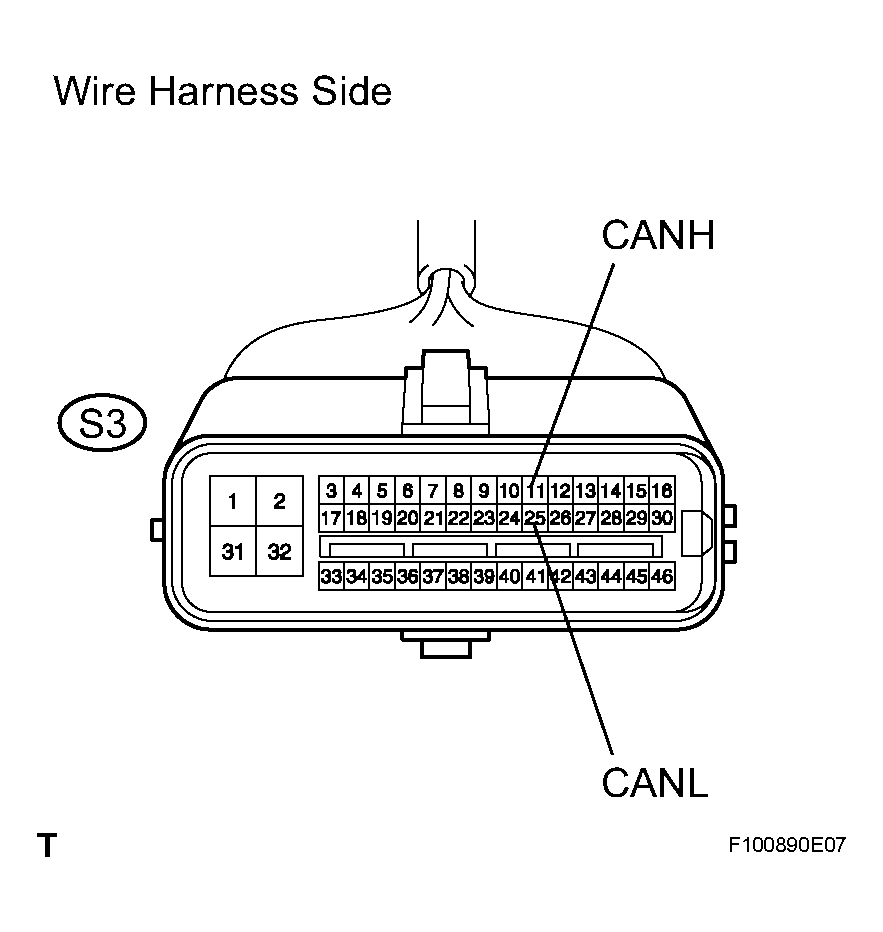
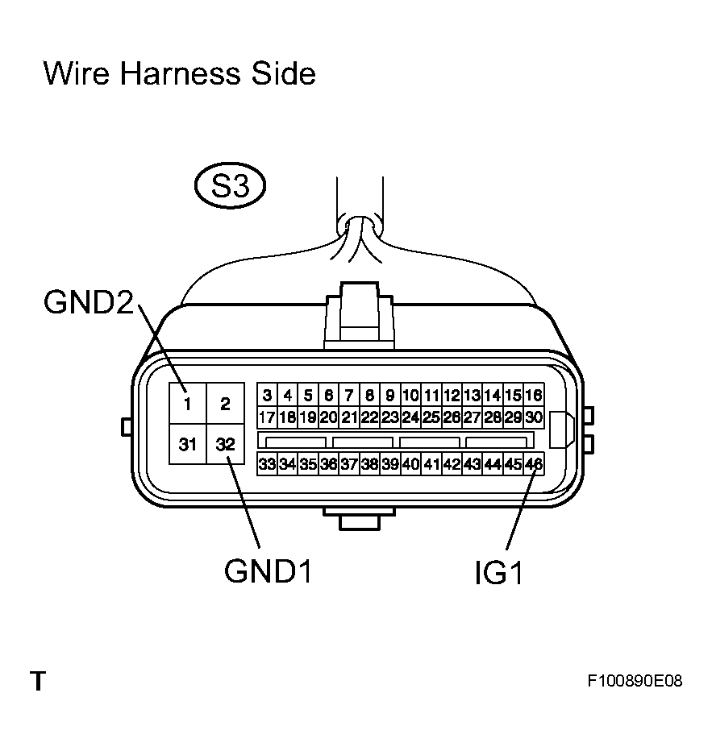

Inspection Procedure
- CHECK CAN BUS LINE FOR DISCONNECTION (SKID CONTROL ECU SUB BUS LINE)
- Disconnect the S3 ECU connector.
- Measure the resistance of the wire harness side connector.
Standard resistance
TESTER CONNECTION SPECIFIED CONDITIONTester Connection Condition Specified Condition S3-11 (CANH) - S3-25 (CANL) Ignition switch OFF 54 to 69 Ω
NG : REPAIR OR REPLACE SKID CONTROL ECU SUB BUS LINE AND CONNECTOR (CANH, CANL)

Courtesy of © TOYOTA, LICENSE AGREEMENT TMS1002OK : Go to Next Step
- CHECK WIRE HARNESS (SKID CONTROL ECU - BATTERY AND BODY GROUND)
- Disconnect the S3 ECU connector.
- Measure the resistance of the wire harness side connector.
Standard resistance
TESTER CONNECTION SPECIFIED CONDITIONTester Connection Specified Condition S3-32 (GND1) - Body ground Below 1 Ω S3-1 (GND2) - Body ground Below 1 Ω - Measure the voltage of the wire harness side connector.
Standard voltage
TESTER CONNECTION SPECIFIED CONDITIONTester Connection Condition Specified Condition S3-46 (IG1) - Body ground Ignition switch ON 10 to 14 V
NG : REPAIR OR REPLACE HARNESS AND CONNECTOR

Courtesy of © TOYOTA, LICENSE AGREEMENT TMS1002OK : REPLACE BRAKE ACTUATOR ASSEMBLY